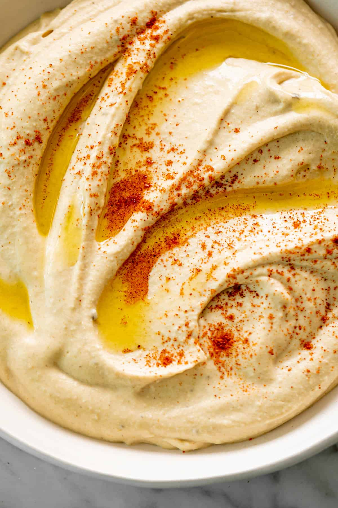

Hummus

- Two cups of cooked chick peas, from a can or from scratch
- 1 tablespoon Tahini
- 2 garlic cloves
- salt to taste
- cumin to taste
- lemon juice to taste
Steps
- Drain the chick peas, saving the liquid, and puree in food processor until smooth
- To food processor add tahini, salt, pepper,cumin and lemon juice.
- Puree all ingredients until smooth.
- If hummus is too dry, add some of the liquid from the chick peas until desired consistency is reached.
- Serve with pita, raw vegetables or chips. Lasts about two days refrigerated.